1. Financial Analysis
Using ratios to analyze performance.
Understanding the numbers
Assets
An asset is a resource with economic value that an individual, corporation, or country owns with the expectation of future benefit.
For e.g., Haagen-Dazs owns the ice cream it is going to sell, the factories and raw materials to make the ice cream, and the trucks to deliver it.
Assets are ordered by the degree to which they can be turned into cash. Assets that can easily be converted into cash are called current assets, and they appear at the top.
Cash and Marketable Securities
Large cash holdings can generally be understood as: * an insurance policy during uncertain times * a war chest for making future acquisitions * a manifestation of the absence of investment opportunities.
Much of this cash is held in government securities so that it can quickly be converted into cash if the need arises.
Accounts receivable
Accounts receivable are amounts that a company expects to receive from its customers in the future. As trust grows in a relationship between a company and its customers, the company might be willing to allow customers to pay later.
Companies that sell to other companies have a higher amount of sales reflected as receivables compared to businesses that sell direct to consumers.
Inventories
The goods or raw materials that become the goods a company intends to sell.
Property, plant, and equipment
The term for the tangible, long-term assets that a company uses to produce or distribute its products.
Other assets
Likely to be intangible assets — things you cannot put your hands on but are valuable nonetheless, like patents and brands.
For e.g., Coca-Cola has a very valuable brand, maybe the most valuable thing it owns, but it does not really know how valuable it is. So accountants ignore it. That's the accounting principle of conservatism.
When a company acquires another company for more than the value of its assets on the balance sheet, the difference is typically recorded on the acquiring company's balance sheet as goodwill.
Microsoft spent $26.2 billion in 2016 to acquire LinkedIn, which had assets with a book value of $7.0 billion. The $19.2 billion Microsoft paid above the book value will show up as goodwill.
Liabilities and Shareholders' Equity
This section provides information on how companies finance themselves. There are two sources of finance for purchasing assets — lenders and owners. Liabilities represent those amounts financed by lenders to whom the company owes amounts. Shareholders' equity, or net worth, corresponds to the funds that shareholders provide.
Shareholders' equity = Assets - Liabilities
Liabilities are ordered by the length of time companies have to repay them, and liabilities that need to be paid back soon are labeled "current."
Accounts payable and notes payable
Accounts payable represent amounts due to others, often over a short time, and typically to the company's suppliers.
Accrued items
Broadly represents amounts due to others for activities already delivered. One example is salaries: a balance sheet may be produced in the middle of a pay period, and the company may owe salaries that have not been paid yet.
Long-term debt
Unlike other liabilities, debt is distinctive because it has an explicit interest rate.
Preferred and common stock
Shareholders' equity represents an ownership claim with a variable return — in effect, the owners get all residual cash from the business after costs and liabilities. Debt has a fixed return (i.e., interest rate) and no ownership claim. It gets paid before equity holders in the event of a bankruptcy. Equity holders have a variable return and an ownership claim but can be left with nothing if a company goes bankrupt. Typically, shareholders' equity, net worth, owner's equity, and common stock are all effectively synonyms. Shareholders' equity is not the amount originally invested in the company by the owners. As a company earns net profits, those profits can be paid out as dividends or reinvested in the company. These retained earnings are a component of shareholders' equity — as if the owners received a dividend and reinvested it in the company.
Preferred stock is often called a hybrid instrument. It combines elements of both debt and equity claims. Like debt, preferred stock dividends can be fixed and paid before common stock dividends. But like equity, it is paid after debt in the event of a bankruptcy. The unique attributes of preferred stock can allow a company to finance itself during precarious times.
Understanding Ratios
Provides comparability across companies through time.
Liquidity
Measures risk by emphasizing the company's ability to meet short-term obligations with assets that can quickly be converted into cash.
Current Ratio = Current assets / Current liabilities
The current ratio asks a question on behalf of a company's suppliers: will this company be able to pay its suppliers if it needs to close?
Quick Ratio = (Current assets - inventory) / Current liabilities
The quick ratio resembles the current ratio, but excludes inventory. When a product goes obsolete the inventory should be considered worthless. It provides a more skeptical view of the company's finances.
Profitability
For every dollar of revenue, how much money does a firm get to keep after all relevant costs?
Profit Margin = Net Profit / Revenue
For every dollar of equity that shareholders invest in a business, what is their annual flow of income?
Return on Equity = Net profit / Shareholders' equity
Return on assets answers the question: How much profit does a company generate for every dollar of assets? This explains how effectively a company's assets are generating profits.
Return on Assets = Net Profit/ Total Assets
EBIT is also known as operating profit. Since some companies have different tax burdens and capital structures, EBIT provides a way to compare companies more directly.
Depreciation refers to how physical assets such as vehicles and equipment lose value over time.
Amortization refers to the same phenomenon but for intangible assets.
EBITDA — earnings before interest, taxes, depreciation, and amortization — is a measure of the cash generated by operations.
The reason to emphasize DA is because they are expenses that are not associated with the outlay of cash — they are just an approximation of the loss of value of an asset. Suppose you build a factory. In accounting, you have to depreciate it and charge yourself an expense for that depreciation. But in finance, we emphasize cash, and there was no cash outlay.
Financing and Leverage
Let's consider your own personal balance sheet after buying a home. What if no mortgages were available for you to buy a home? If you had $100, you could only buy a home that was worth $100. With a mortgage market, you can borrow money to buy a home that is worth, say, $500.
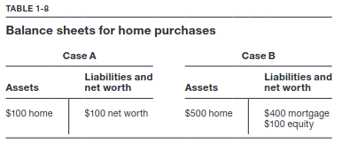
In effect, leverage allows you to live in a house you have no right to live in. Here's the big question: are you richer in case A or case B? No difference — you have shareholders' equity of $100 in each.
If the value of the house increases by 10 percent, in case A, the return to your shareholders' equity is 10 percent. But in case B, the return is 50 percent if the house value goes to $550 — the mortgage remains at $400.
If the house declines by 20 percent, the return in case A is -20 percent. But in case B, the return is -100 percent. So managing leverage is critical because it enables you to do things you couldn't do otherwise.
It magnifies returns in both directions.
The ratio of total debt to total assets measures the proportion of all assets financed by debt. It provides a balance sheet perspective on leverage.
Debt to Assets = Total Debt/ Total Assets
The ratio of long-term debt to capitalization provides a somewhat more subtle measure of leverage by emphasizing the mix of debt and equity.
Debt to capitalization = Debt / (Debt + Shareholders' equity)
Leverage provides the ability to control more assets than an owner would otherwise have the right to control. Assets to Shareholders' Equity tells us precisely how many more assets an owner can control relative to their own equity capital. As a consequence, it also measures how returns are magnified through the use of leverage.
Assets to Shareholders' Equity = Assets / Shareholders' Equity
The ratio of EBIT to interest expense measures a company's ability to fund interest payments from its operations.
Interest Coverage Ratio = EBIT / Interest Expense
Productivity or Efficiency
Asset turnover measures how effectively a company is using its assets to generate revenue. This is a critical measure of a company's productivity.
Asset Turnover = Revenue / Total Assets
Inventory turnover measures how many times a company turns over or sells all its inventory in a given year. The higher the number, the more effectively the company is managing its inventory as it sells products.
Inventory Turnover = Cost of Goods Sold (COGS) / Inventory
We can use this turnover number to get another measure of inventory management: days of inventory. It provides the average number of days a piece of inventory is kept inside a company before it is sold.
Days of inventory = 365 / Inventory Turnover
After a company sells its inventory, it needs to get paid for it. The lower this figure, the faster a company is getting cash from its sales.
Receivable Collection Period = 365 / (Sales / Receivables)
Identifying industries based on ratios
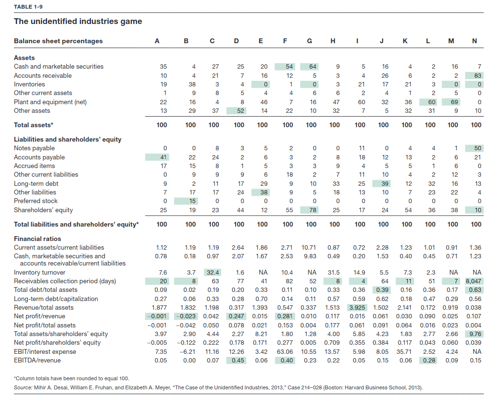
Service Companies
Since these provide services rather than tangible goods, they do not hold any inventories — E, G, M, and N.
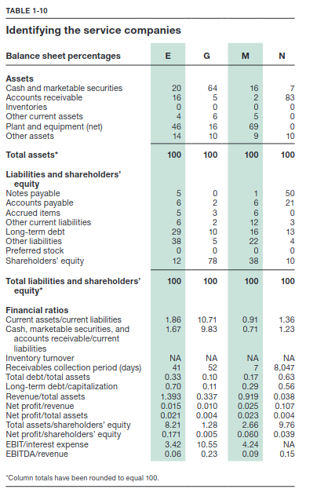
Company N
Owns a lot of receivables and takes a long time to collect. A large part of their financing comes from notes payable — this is a bank. The loans that you consider as your liabilities are a bank's assets. Banks run a "spread" business, where they charge you more for loans than they give you on your deposits.
Capital-intensive service providers
Companies E and M have much more property, plant, and equipment. The most significant difference between these two companies is that M gets paid in seven days on average, which likely means it sells mostly to individuals. In contrast, E takes longer to collect, which would suggest that it is much more likely to be selling to other businesses. Company E has a lot of other liabilities. These liabilities are pension obligations to retirees.
Cash-rich, equity-dependent service company
Company G has a large amount of equity and lots of cash. This company is Facebook. A high equity number can coincide with younger companies. As the company has matured, it has completed a number of large acquisitions: WhatsApp and Instagram. These would reduce cash on the balance sheet and show up as goodwill.
Retailers
Since retailers sell goods directly to customers, their receivables collection period is going to be shorter because the customers pay immediately via cash or credit. In contrast, businesses that do business with other businesses give credit of a minimum of 30 days — A, B, H, I, and K.
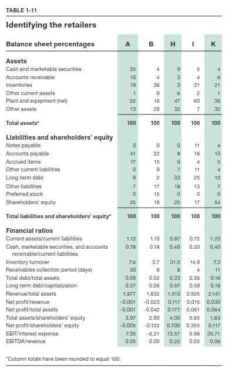
Companies with distinctive inventory turnover
Company H turns its inventory over 32 times a year. They have eleven days of inventory at any time. This is Yum! A grocery chain also has perishable goods, but it also has a selection of dry and canned foods, making its turnover considerably slower than a restaurant chain.
At the other extreme, B turns over inventory really slowly (~90 days). This is a bookstore. It is also losing money, which shows up in the negative profit margin. B is also the only company that has preferred stock, indicating its troubled financial position.
The final three retailers
Out of the remaining 3 retailers, A has the lowest property, plant, and equipment. This could be Amazon. A has a large amount of payables, which could mean that it is in trouble or that it is granted credit easily by suppliers because of its size. Given the amount of cash they have on their balance sheet, we know they are not in financial trouble.
Company I has more PP&E compared to K. Company I also receives more immediate payments and inventory turnover is faster, indicating it is a grocery chain. K, on the other hand, is a drug store that gets revenue from insurance companies.
The Stragglers
Three companies have barely any PP&E while the remaining two have significant PP&E. One is likely Duke Energy, and the other is Nordstrom. The other 3 companies — Microsoft, Pfizer, and Dell — don't really do any heavy manufacturing, so that makes sense.
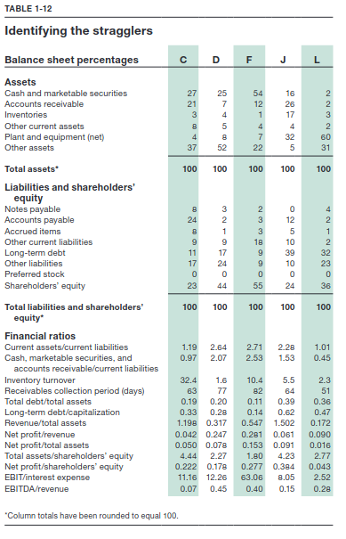
The key differentiating factor between Duke and Nordstrom is that Nordstrom would have more inventory compared to an energy company. So L is Duke and J is the retailer, Nordstrom. Also, the big EBITDA margin for company L means a large amount of depreciation and amortization — that's what utilities do.
Of the last three, C has a really low profit margin. Whereas D and F have astounding profit margins and EBITDA margins. This type of commodification has happened in the laptop industry. C also holds inventory for 10 days, which matches Dell's just-in-time business model — only starts manufacturing after it takes orders, keeping inventories as low as possible.
Out of the remaining two companies, D has a lot of other assets, which probably means an intangible capital-intensive industry that has been consolidating. Pfizer has had a long string of acquisitions. D is Pfizer and F is Microsoft. Another piece of confirmatory evidence is that D has more other liabilities than F — confirming that Pfizer has an old-style pension plan, while F holds large balances.
DuPont Framework
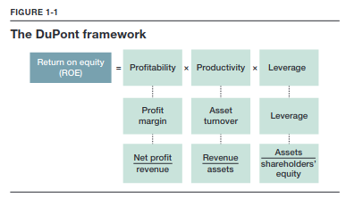
The DuPont framework breaks return on equity (ROE) into 3 ingredients: profitability, productivity, and leverage.
Profitability: Goes back to the notion of profit margin. For every dollar of revenue, how much does the company earn in profit?
Productivity: Uses the asset turnover ratio, which measures how efficiently a company can use its assets to generate sales.
Leverage: Magnifies returns. Divide the company's assets by its shareholders' equity.
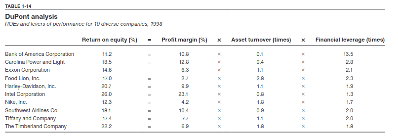
Profound changes at Timberland
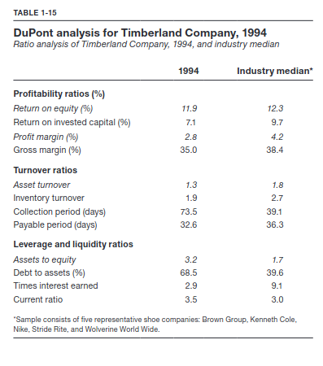
Timberland is a manufacturer and retailer of rugged outdoor gear. Looking at its numbers and comparing them with the industry, we see that ROE is close to the average but it largely comes from leverage. That means it is overcoming its poor operational performance by taking on more risk.
Return on capital, also known as return on invested capital, considers both capital providers and their combined return.
Return on Capital = EBIAT / (Debt + Equity)
Other numbers that also tell us about poor performance are "times interest earned" (how many times it can cover its interest payments from operating earnings) and inventory turnover rate.
Its receivables are also out of whack (73.5 vs. 39.1) — management is not being aggressive about collecting cash owed to the company.
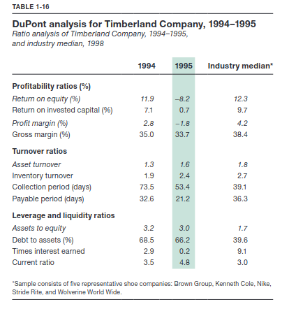
A year later, we can see that the ROE is negative, driven by negative profitability. Productivity is up a little and leverage has decreased. Times interest earned went from over three to one, indicating that Timberland did not have enough operating profit to make its interest payments. Inventory turnover increased markedly, while gross margins dipped significantly. This indicates a fire sale of sorts — liquidating goods to raise cash to make payments. Its receivables collection period dropped by 20 days. The payable period also decreased, indicating that suppliers were unlikely to extend credit given the financial situation.
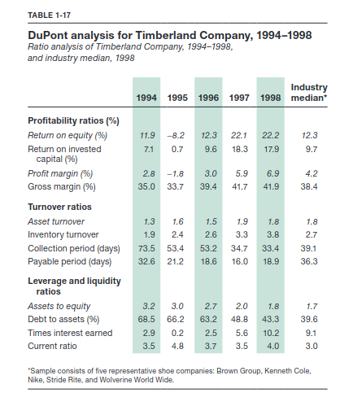
Timberland was moving more inventory, not by cutting prices. Its profit margin was improving and leverage was coming down. Its gross margin indicates pricing power even as it was moving more goods.
2. The Finance Perspective
The Conservatism Principle Implies that companies should record lower estimated values of their assets and higher estimates of their liabilities. They err on the side of being conservative. Thus, balance sheets typically record assets at their historical cost, not their current replacement value.
The Rules of Accrual Accounting Try to smooth out both revenues and costs in an effort to better reflect the accounting reality. They allow a company to capitalize an investment as an asset, and to expense it as depreciation charges every year over the asset's entire life. For example, Airbus Group built a new factory that cost $600 million. Because of accrual accounting, Airbus would report more moderate profits over time rather than losses in 2015 and then profits after the plant started production. This representation of profits is quite distinct from their true cash outflows, obscures the time value of money, and may reflect managerial discretion — cash flows would not.
What We Talk About When We Talk About Cash
Accounting asks managers to make decisions in order to smooth returns, as accountants consider that to be more consistent with reality. For e.g., an up-front payment for a piece of equipment has to be capitalized, placed on the balance sheet, and then depreciated over time. Revenue similarly may need to be recognized over time. But this process of smoothing measures of performance is subjective, which allows managers to manipulate profits to their advantage. In contrast, cash is cash and, arguably, is not susceptible to similar levels of managerial discretion.
To build an alternative foundation for assessing economic returns, we need to identify cash flows as opposed to profits.
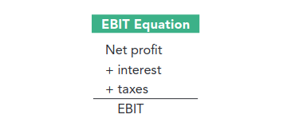
EBIT gives a view of how efficient and profitable a company is by not considering taxes and interest (not related to operational performance). It is still not quite a measure of cash, because it is calculated by subtracting noncash expenses such as depreciation and amortization.
For a fuller picture, finance professionals turn to EBITDA: earnings before interest, taxes, depreciation, and amortization.
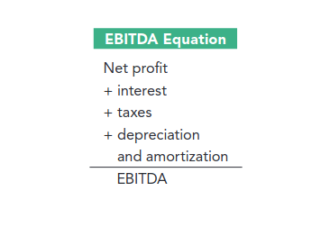
EBITDA can be more relevant for some industries than others. In 2015, the depreciation-to-net-income ratios of EA, The Michaels Companies, and Comcast were 17%, 34%, and 106%. Comcast invested heavily to create a nationwide cable and internet network. Because of those heavy investments, using net profit as a measure can be flawed in comparison to EA, which is a software company.
Amazon's Net Profit, EBIT, and EBITDA
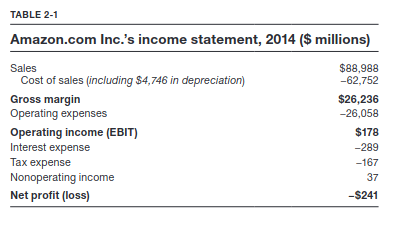
In 2014, Amazon's EBIT was \(178 million, Net Profit was -\)241 million, and EBITDA was $4.76 billion. So Amazon generated a lot of cash as measured by EBITDA, but had losses according to profitability measures.
From EBITDA to Operating Cash Flows
Given the obsession with cash, there exists another statement dedicated to it — the cash flow statement. It is often considered the most important financial statement.
The income statement has the problem of noncash expenses as well as managerial discretion, whereas the balance sheet has the problems of historical accounting and conservatism.
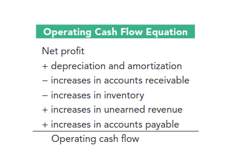
Operating cash flow is distinct from EBITDA in several ways. First, it considers the cost of working capital, and second, it considers tax and interest payments by beginning with net profit. It also includes noncash expenses other than depreciation and amortization (such as stock-based compensation) in its final calculation.
The investing section emphasizes the ongoing investments that bypass the income statement and go straight into the balance sheet. Such as CapEx, and acquisitions.
The financing section examines whether a company has offered debt or paid back debt, or issued equity or bought back stock, and reveals the cash consequences of doing so.
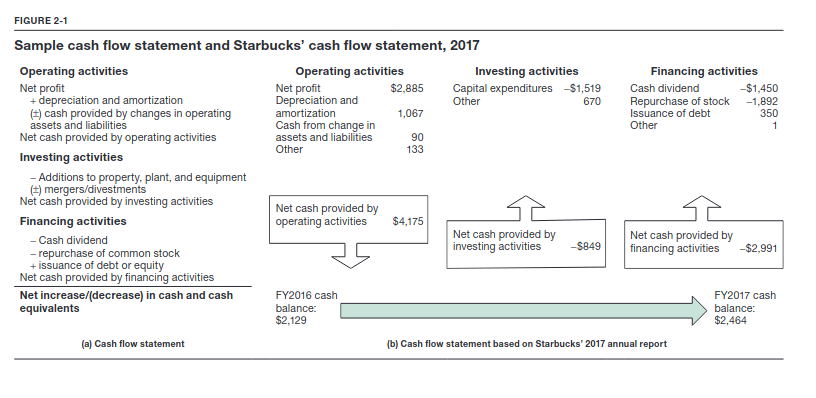
Working Capital
It is the capital required by the company to fund its day-to-day operations.
Working Capital = Current Assets - Current Liabilities
A slightly narrower way to define working capital:
Working Capital = Accounts Receivable + Inventories - Accounts Payable
One simple way to think about the consequences of working capital is to note that the daily operations of the company result in an amount that needs to be financed like any other asset. If the amount of working capital is lowered, that lowers the financing needs of the company.
The cash conversion cycle
A powerful way to frame the financing consequences of working capital is to frame working capital temporally rather than monetarily. This framing is called the cash conversion cycle.
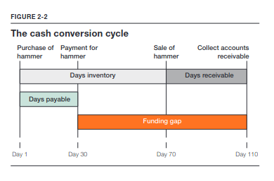
For example, suppose you have a store where you buy hammers from wholesalers and sell them to home improvement professionals. There are several transactions with a single hammer and they don't happen all at once. You first buy the hammer, pay for it, sell it, and collect the cash for the sale. If you sell the hammers 70 days from the day you bought them, and you don't get paid for another 40 days, it takes a total of 110 days from the time you bought the hammer to getting cash for it. In addition, you pay cash for the hammer 30 days after you have bought it.
From a cash perspective, you need to generate cash to pay for the hammer — 80 days. If companies pay before getting paid, they must finance these shortfalls in their cash conversion cycles.
In a recession, companies hold on to their inventories for longer, and even when they do sell a hammer, the contractor who is getting squeezed by his customers will take longer to pay up.
Let's return to the hardware store. A supplier encourages you to pay within 10 days by offering a 2% discount — is that a good deal? The alternative is a bank that charges 12% a year. That is less than 1% to fund the 20 days if you took the deal from the supplier.
Note: Companies such as Salesforce.com that have a software-as-a-service business typically have a negative cash conversion cycle. They have no inventory. By taking payments first and then providing services, those payments are used to finance operations.
How Amazon Grows ... and Grows
Amazon manages its inventories, receivables, and payables in such a way that it has negative working capital. In 2014, Amazon averaged 46 days of inventory, and it collected from its customers after 21 days. Due to its market dominance, it can make its suppliers wait before getting paid — it averaged 91 days to pay its suppliers. This becomes a source of cash. Likewise, Apple uses its negative working cycle to grow rapidly without seeking external financing.
Free Cash Flow
The final cash measure is free cash flow, one of the most important measures of economic performance in finance. The equation for calculating free cash flow provides a measure of the amount of cash flow unencumbered by the operations of a business. It's the purest measure of cash and forms the basis of valuation. It removes the distorting effects of non-cash charges such as depreciation and amortization, accounts for changes in working capital, and acknowledges capital expenditures required for growth.
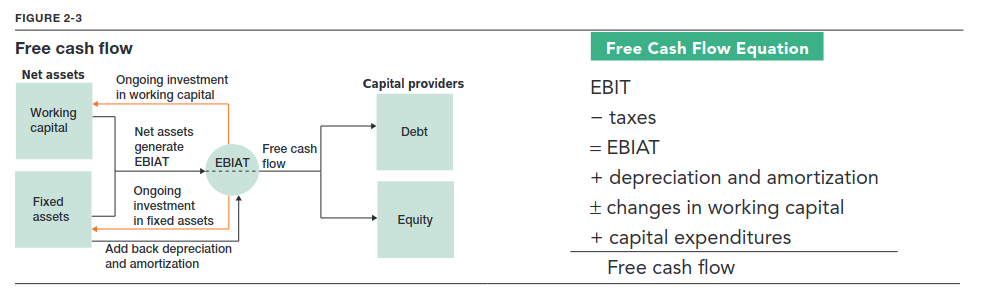
The net assets side of the balance sheet is divided into working capital and fixed assets (PP&E), and the financing side of the balance sheet is divided into debt and equity. This modified balance sheet now distinguishes between operations and the capital providers. The flow from operations ultimately ends up with the capital providers.
The operations of the business generate EBIT, but the government takes its share to make it EBIAT. From there, you must consider the company's ongoing investment into working capital and fixed assets as it grows. Finally, noncash expenses that should never have been expensed must be added back. What's left is the free cash flow.
Amazon vs. Netflix
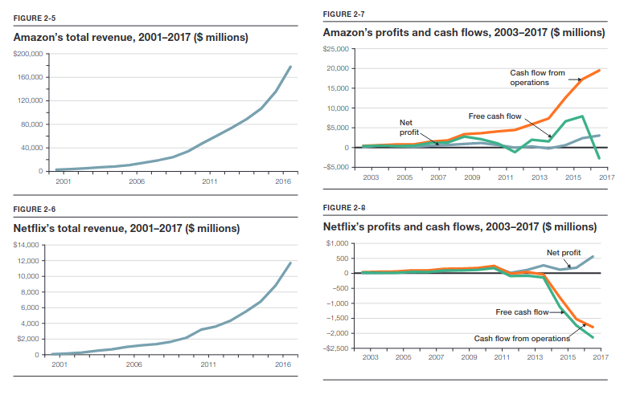
Amazon seems not to have made profits, at least until very recently. By the profit metric, Netflix appears to be more profitable than Amazon, with a profit margin of 5% relative to Amazon's 2%.
Now, look at their respective operating cash flows. In Amazon's case, the cash flow engine is being driven by all its noncash expenses and its management of working capital. On the other hand, Netflix has negative cash flows because of its heavy investments in content. In short, they are buying increasing amounts of content and quickly amortizing it, creating a cash drain.
Finally, looking at their free cash flows: considering capital expenditure changes the view a bit more. Netflix doesn't have significant CapEx, so its free cash flow isn't considerably worse than cash from operations. Amazon has more significant CapEx, so it is free-cash-flow negative.
Fixated on the Future
The source of all value today is future performance manifested in cash flows. That creates a problem for finance, as not all future cash flows are created equal. $1 today is worth more than $1 tomorrow, and similarly more than $1 a year from now. But how much more? That depends on the opportunity cost of that money. What could you have done with the money if you did not have to wait? Once you figure that out, you then "punish" future cash flows by assessing a penalty that accounts for that opportunity cost. That's called a discount rate.
Discounting
Let's say you get 10% by keeping your money in a bank. So after a year you have $1.10. That's the first clue that $1 today is worth more than $1 a year from now.
As a consequence, now you know how to punish future cash flows for making you wait to receive them. Every time you have to wait a year, you "haircut" future cash flows by one plus the interest — (1 + r) because that's what you would have earned if you hadn't had to wait.
For example, you want to figure out how much $1000 received 1 year from now is worth today. Assume that a bank would have offered you an interest rate of 5%. The present value of $1000 received a year from now is $952.38, as $952.38 put in a bank today would give you $1000 after a year. If the interest rate rises to 10%, it would be $909.09.
Multiyear Discounting
What if you have cash flow over multiple years into the future? You can simply discount the multiple cash flows.
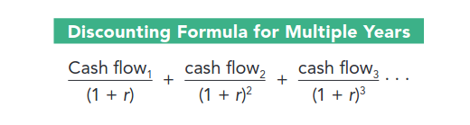
Suppose the bank is offering a $1000 payment for each of the next three years and the prevailing interest rate is still 5%.
When you add the three values together, you arrive at how much the bank's offer is worth today:
(1000 / (1 + 0.05)) + (1000 / (1 + 0.05)^2) + (1000 / (1 + 0.05)^3) = 952.38 + 907.03 + 863.84 = $2723.25
The impact of discount rates
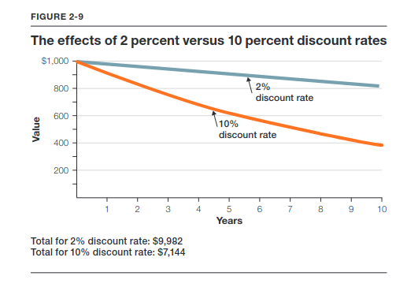
Sunk Costs and Net Present Value
Sunk costs are costs that have already been incurred and can't be recovered. While accounting carefully considers them in balance sheets and income statements, finance professionals view the amount paid for an asset as gone forever.
For example, a company spends $100,000 to research a new product. Those amounts are gone and can never be recovered. Even the time spent on planning, creating, and launching the product is gone.
In short, assessing value requires you to: * look into the future * think about the incremental cash flows that will be generated over time * discount them back to the present value
For example, assume Nike is building a new shoe factory at a cost of $75 million. The plant will produce $25 million in cash every year from the shoes Nike is able to make and sell, for the next five years. Assuming a 10% discount rate for this project:
Nike Factory Present Value = (25/(1.10)^1) + (25/(1.10)^2) + (25/(1.10)^3) + (25/(1.10)^4) + (25/(1.10)^5) = $94.8 million
By paying $75 million for the project, Nike is able to generate $19.8 million in additional value, so Nike should go ahead and build the factory. Companies should undertake projects with positive net present value.
Now, for example, suppose sales have not been good and the new factory makes only $10 million and expects this trend to continue.
Nike Factory Present Value = (10/(1.10)^1) + (10/(1.10)^2) + (10/(1.10)^3) + (10/(1.10)^4) + (10/(1.10)^5) = $31.7 million
The present value of the factory is $31.7 million. If a rival company approaches Nike and offers to buy the factory for $40 million, Nike should sell it — Nike gives up the future cash flows in the process, but receives more than they are worth today.
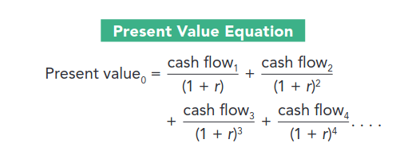
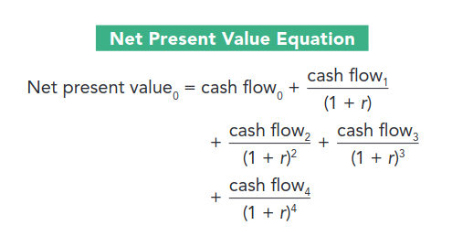
If managers care about value creation, then the most important financial decision rule is to undertake only positive net present value projects.
Equity Analysis for Corning Glass
Corning makes glass for the displays on smartphones, televisions, and laptops. It is one of the few companies that has mastered the art of manufacturing this type of glass, as it is extremely difficult to make.
Corning grew rapidly in the early 2000s as demand for flat-screen televisions and smartphones skyrocketed. Eventually, demand began to slow, and Corning started underperforming the market despite its technology and market leadership.
Would you buy or sell Corning?
It looks like Corning's customers are in trouble. LG's margin and the margins of all other display makers are compressing, which is limiting their cash flow. In fact, glass prices — which impact Corning's margin — hadn't dropped in the same way that display prices had. That's because of Corning's competitive edge and its pricing power. Since display makers are beholden to Corning, the company can maintain high prices even when the cost of displays decreases.
Corning grew rapidly in the 2000s by investing heavily in manufacturing facilities, so it had a large amount of depreciation, which reduced its EBIT. That would have resulted in a large difference between its EBIT/revenue and EBITDA/revenue ratios. The EBITDA margin is more reliable in this case because Corning had already invested in growing its manufacturing resources earlier in the 2000s. In 2012, the EBIT/revenue margin was 14% compared to an EBITDA/revenue margin of 27%.
Forecasted Cash Flows
The next step is to forecast cash flows, and then discount them back to get the present value.
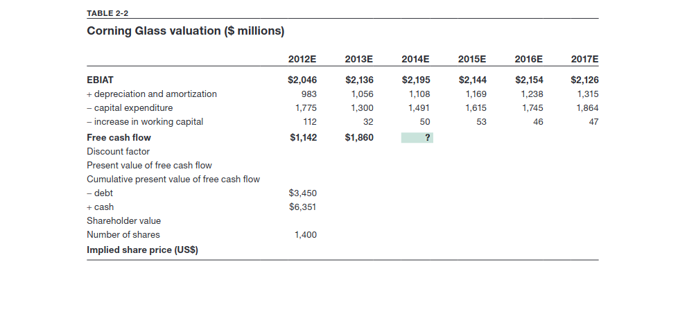
Using the free cash flow formula, we get (2014E) = 2195 + 1108 - 1491 - 50 = 1762.
Assuming a discount rate of 6%:
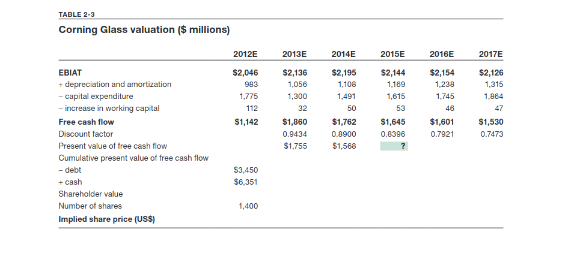
To figure out whether buying the stock is a good investment, add the cash on the balance sheet and subtract the value of debt. All the future cash flows should be added as well, after discounting them.
So Corning's valuation was $21,152 million, and given 1,400 million shares outstanding, the value per share was $15.12. The stock price was $11. By understanding the source of Corning's profit margins and knowing EBITDA was a more reliable metric than EBIT, one could make the decision whether to buy or sell the stock.
Hon Hai Sharp
Let's look at Japan's Sharp Corporation, which designs and manufactures electronic products such as TV sets, and Hon Hai Precision Industry Co., the world's largest electronic manufacturer. The cornerstone of the case is Sharp's Sakai LCD plant. Sharp was the first company to make and commercialize flat-panel displays, and it had to decide whether to build even larger displays. LCD displays were once very small, and Sharp thought that over time it could gain a competitive advantage through scale economies by making bigger displays. But this came with some manufacturing challenges, as large displays require massive sheets of glass, which require large factories.
In 2011, Sharp estimated that it would require an investment of $5.8 billion spread over three years to build the world's largest display factory in Sakai, near Osaka, Japan. Once the plant was commissioned in 2014, it would start generating cash for the company. Assuming a discount rate of 8 percent, let's calculate the net present value to decide whether Sharp should build the plant.
The net present value was -$2,988.11 million. Should Sharp have built the plant? Everything we've discussed suggests that it should not. Despite the negative NPV, Sharp decided to build the plant because it was so enamored with both the technological challenge and the desire to be on the cutting edge.
Sharp soon ran into problems and had to sell 46 percent of the plant to Terry Gou, chairman of Hon Hai Precision, for $780 million. This transaction implied a valuation of the plant of $1.7 billion.